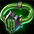
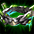
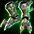
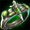
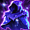
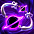
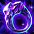

1500Lv装備一覧
1500Lv帯はヴェノムベッセル系統 (毒テーマ) と 位相征服者エルシュカ系統 (星/月テーマ) の2系統に大別される。
エルシュカ系統
ヴェノムベッセル系統
ヴェノムベッセル系統 (毒テーマ) の1500Lv装備。
ヴェノムベッセル および周辺コンテンツのドロップ品/製作品。
| インフュージョンモジュール | インフュージョンモジュール[Nx] | ||||||||||
|---|---|---|---|---|---|---|---|---|---|---|---|
 | <基本情報> - ネックレス - 全てのスキルレベル [2~4] 増加 - 魔法ダメージを 40％ 強化させる。 - CP獲得量増加 20％ - 魔法致命打ダメージ増加 7％ - 魔法強打ダメージ増加 2％ 錬成 可能 | <基本情報> - ネックレス - 全てのスキルレベル [4~6] 増加 - 魔法ダメージを 45％ 強化させる。 - CP獲得量増加 25％ - 魔法致命打ダメージ増加 10％ - 魔法強打ダメージ増加 5％ <錬成 オプション 情報> - このアイテムの着用レベル -200 - 回避率 +10％ - 命中率 +10％ - 最終攻撃力増加 10％ | |||||||||
| <要求能力値> - レベル 1500 | <着用可能な職業> | <要求能力値> - レベル 1500 | <着用可能な職業> | ||||||||
| <価格> 990000000 Gold | <価格> 990000000 Gold | ||||||||||
| <説明> - 含ませた毒を、装着者の魔力回路に注入するマスク。毒によっては、精密な計算によってむしろ対象を飛躍的に強化させる。 | |||||||||||
| エイトオルム | エイトオルム[Nx] | ||||||||||
|---|---|---|---|---|---|---|---|---|---|---|---|
 | <基本情報> - ベルト - 防御力 [15~19] 増加 - スタックアイテム 18個 - 物理攻撃力増加 100％ - 防御力 +50％ - 攻撃速度 +10％ - 物理ダブルクリティカルダメージ増加 10％ 錬成 可能 | <基本情報> - ベルト - 防御力 [18~22] 増加 - スタックアイテム 18個 - 物理攻撃力増加 120％ - 防御力 +70％ - 攻撃速度 +20％ - 物理ダブルクリティカルダメージ増加 15％ <錬成 オプション 情報> - このアイテムの着用レベル -200 - 健康 200 増加 - 被物理ダブルクリティカルダメージの減少 30％ - 最大HP +800 | |||||||||
| <要求能力値> - レベル 1500 | <着用可能な職業> | <要求能力値> - レベル 1500 | <着用可能な職業> | ||||||||
| <価格> 990000000 Gold | <価格> 990000000 Gold | ||||||||||
| <説明> - ヴェノムベッセルの動力炉を改造して製作したベルト。ウポスマイヤー地域のいにしえの秘伝により、内部循環の過程で毒を力に変換する機能を持つ。 大きさは比べものにならないものの、遥か昔に世界を覆ったという伝説の蛇を連想させるほど致命的な毒が、ベルトの動力炉を流れる。 | |||||||||||
| ヴェノマストレール | ヴェノマストレール[Nx] | ||||||||||
|---|---|---|---|---|---|---|---|---|---|---|---|
 | <基本情報> - ブーツ - 攻撃力 10~14 - 防御力 [26~30] 増加 - ノックバック 抵抗 [60~70]％ 増加 - バジリスクパス 発動 - 力 250 増加 - 知識 250 増加 - 移動速度 +25％ 錬成 可能 | <基本情報> - ブーツ - 攻撃力 10~14 - 防御力 [30~34] 増加 - ノックバック 抵抗 [70~80]％ 増加 - バジリスクパス 発動 - 力 300 増加 - 知識 300 増加 - 移動速度 +30％ <錬成 オプション 情報> - このアイテムの着用レベル -200 - 敏捷 200 増加 - 歩く時 CP +20ポイント - スキルレベル+4 | |||||||||
| <要求能力値> - レベル 1500 | <着用可能な職業> | <要求能力値> - レベル 1500 | <着用可能な職業> | ||||||||
| <価格> 990000000 Gold | <価格> 990000000 Gold | ||||||||||
| <説明> - ヴェノムベッセルの誕生に利用された技術を応用して作られた戦闘靴。自分の通り道に猛毒の霧を残し、敵を中毒にさせる機能を持つ。 -「浅はかにも、力で押し通すほど愚かなものはない。我が軍団が立ち去った跡には、世界中の邪魔者どもが死体となってあちこちに転がっていることだろう。」 | |||||||||||
| シュミットのあがき | |||
|---|---|---|---|
 | <基本情報> - リング - 毒抵抗+80％ - スキルレベル+3 - 中毒が付与された敵にダメージを与える時に最終ダメージ 3％ 増加 | ||
| <要求能力値> - レベル 1500 | <着用可能な職業> | <価格> 3 Gold | |
| <説明> - 野心溢れる研究者シュミットが最期の瞬間までつけていた指輪。かつては天上から降り立った聡明な追放天使と肩を並べ、彼女を含む全てを飲み込んで世界を掌握しようとした。しかしその野望は結局、デフヒルズ僻地の研究所に閉じ込められたまま潰えてしまった。 - 取引不可 | |||
エルシュカ系統
位相征服者エルシュカ系統 (星/月テーマ) の1500Lv装備。
位相征服者エルシュカ 関連コンテンツの入手品。星光の烙印ギミックを持つ装備を含む。
| 兆候 | 兆候[Nx] | ||||||||||
|---|---|---|---|---|---|---|---|---|---|---|---|
| <基本情報> - 冠 - 防御力 [20~24] 増加 - すべての状態異常 抵抗 [30~40]％ 増加 - vs ボスダメージ増加 10％ - 星光の烙印が刻まれている対象に最終物理、魔法ダメージ 10％ 増加 - 敵の全ての属性抵抗(％) -55％ 錬成 可能 | <基本情報> - 冠 - 防御力 [22~26] 増加 - すべての状態異常 抵抗 [40~50]％ 増加 - vs ボスダメージ増加 10％ - 星光の烙印が刻まれている対象に最終物理、魔法ダメージ 13％ 増加 - 敵の全ての属性抵抗(％) -66％ <錬成 オプション 情報> - このアイテムの着用レベル -200 - 知識 200 増加 - スキルレベル+2 - 魔法致命打10％ | ||||||||||
| <要求能力値> - レベル 1500 | <着用可能な職業> | <要求能力値> - レベル 1500 | <着用可能な職業> | ||||||||
| <価格> 990000000 Gold | <価格> 990000000 Gold | ||||||||||
| <説明> - エルシュカの輪を模倣して作られた冠。支えるものがなくても持ち主の頭の上で浮遊する。異界ではエルシュカの輪は彼女の神聖な象徴であったが、ある時には輪を見た者の終わりがやって来た事を告げる兆候でもあった。特別な標識を持つ敵を攻撃するとより大きなダメージを与えることができる。 -あの紫の輪を見てみろ。待ちに待った我々の終末がやって来たのだ。立って槍をもって迎えよ！ | |||||||||||
| ロストムーンライト | ロストムーンライト[Nx] | ||||||||||
|---|---|---|---|---|---|---|---|---|---|---|---|
| <基本情報> - イヤリング - すべての状態異常 抵抗 [25~50]％ 増加 - 限界突破称号の物理効果2.0％、魔法効果0.0％ - 物理ダブルクリティカルダメージ増加 8％ - 物理攻撃力増加 50％ 錬成 可能 | <基本情報> - イヤリング - すべての状態異常 抵抗 [35~60]％ 増加 - 限界突破称号の物理効果2.0％、魔法効果0.0％ - 物理ダブルクリティカルダメージ増加 10％ - 物理攻撃力増加 75％ <錬成 オプション 情報> - このアイテムの着用レベル -200 - 最大CP +50％ - CP獲得量増加 10％ - フィールドのステータス低下抵抗(％) +3％ | ||||||||||
| <要求能力値> - レベル 1500 | <着用可能な職業> | <要求能力値> - レベル 1500 | <着用可能な職業> | ||||||||
| <価格> 990000000 Gold | <価格> 990000000 Gold | ||||||||||
| <説明> - 銀色の月の形をしたイヤリング。満月と三日月がペアになって作られた。エルシュカの強力な力が感じられるが、人間が使うような小さなサイズでエルシュカ本人が使っているものではなさそうだ。三日月のイヤリングの裏側には小さな文字が刻まれている。 -君にまた会えるなら | |||||||||||
| 星空の裾 | 星空の裾[Nx] | ||||||||||
|---|---|---|---|---|---|---|---|---|---|---|---|
 | <基本情報> - マント - 火,水,風,大地 抵抗 [12~15]％ 増加 - 限界突破称号の物理効果0.0％、魔法効果3.0％ - 魔法強打ダメージ増加 5％ - 全ての属性攻撃力増加 30％ 錬成 可能 | <基本情報> - マント - 火,水,風,大地 抵抗 [15~18]％ 増加 - 限界突破称号の物理効果0.0％、魔法効果3.0％ - 魔法強打ダメージ増加 8％ - 全ての属性攻撃力増加 45％ <錬成 オプション 情報> - このアイテムの着用レベル -200 - 最大CP +50％ - CP獲得量増加 10％ - フィールドのステータス低下抵抗(％) +3％ | |||||||||
| <要求能力値> - レベル 1500 | <着用可能な職業> | <要求能力値> - レベル 1500 | <着用可能な職業> | ||||||||
| <価格> 990000000 Gold | <価格> 990000000 Gold | ||||||||||
| <説明> - 夜空が込められているようなマント。星を彩ったような夜の景色が美しいが、エルシュカはいつのまにかその向こうの空虚な暗闇しか見ることができなくなった。 -なんの意味があるのかしら……? | |||||||||||
| 宿命 | 宿命[Nx] | ||||||||||
|---|---|---|---|---|---|---|---|---|---|---|---|
 | <基本情報> - グローブ - 攻撃力 11~12 - 防御力 [15~18] 増加 - vs ボスダメージ増加 10％ - 星光の烙印が刻まれている対象に最終物理、魔法ダメージ 10％ 増加 - 物理攻撃力増加 100％ 錬成 可能 | <基本情報> - グローブ - 攻撃力 11~12 - 防御力 [19~22] 増加 - vs ボスダメージ増加 10％ - 星光の烙印が刻まれている対象に最終物理、魔法ダメージ 13％ 増加 - 物理攻撃力増加 150％ <錬成 オプション 情報> - このアイテムの着用レベル -200 - 攻撃速度 +10％ - 命中率 +8％ - 物理ダブルクリティカルダメージ増加 10％ | |||||||||
| <要求能力値> - レベル 1500 | <着用可能な職業> | <要求能力値> - レベル 1500 | <着用可能な職業> | ||||||||
| <価格> 990000000 Gold | <価格> 990000000 Gold | ||||||||||
| <説明> - エルシュカの衛星を象った腕輪。二つの衛星が腕を巻き空転するような形をしている。特別な標識を持つ敵を攻撃するとより大きなダメージを与えることができる。 -誰にでも、どこにいても必ず終末はやってくるよ。 | |||||||||||
| 終焉の指輪 | |||
|---|---|---|---|
 | <基本情報> - リング - カリスマ [10~50] 増加 - vs 位相ダメージ増加 3％ - 攻撃的中時、対象に星光の烙印を刻む。(持続時間3秒) - 攻撃速度 +10％ | ||
| <要求能力値> - レベル 1500 | <着用可能な職業> | <価格> 3 Gold | |
| <説明> - 宇宙を形象化したような指輪。暗闇の中で光っている星の光は見栄えがいいが、なんだか不吉な感じもする。自身が攻撃した対象に特別な標識を与える力がある。 -何もかもがつまらないね。何も要らないよ。 - 取引不可 | |||